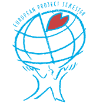

EPS project
The opportunity to gain international experience
in a multidiciplinair and multicultural project
for one semester in another university.

Definition
European Project Semester (EPS) is a one-semester programme designed to train mainly third year engineering and technology students to carry out project work in international teams. The value of working in an international environment and at the same time improving your English language skills cannot be overestimated in today’s global economy.
EPS project at Lodz University of Technology
Technical projects with a strong interdisciplinary aspect, which are selected from the proposals submitted by TUL professor, are implemented at Lodz University of Technology.
The project is intended for students from foreign universities who, as part of exchange programmes (eg Erasmus+) study at Lodz University of Technology, and IFE students. Students are divided into 4-6 person international teams, each of which is run under the supervision of a tutor from TUL.